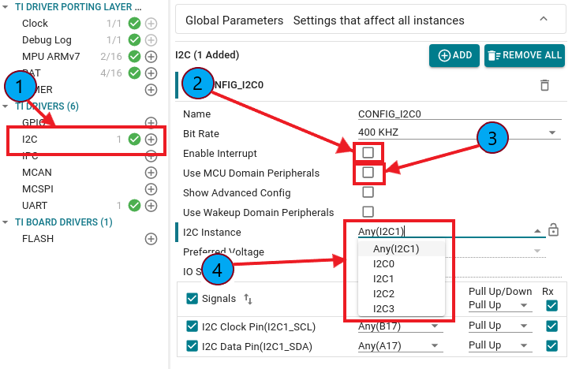
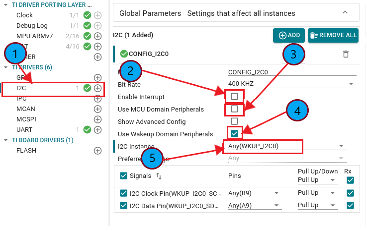
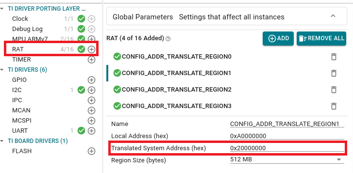

Introduction
The driver examples (GPIO, I2C, SPI and UART) for MCU-M4 provided as part of this SDK by default uses the instances from the MCU domain. However the examples can be modified to use main/wakeup domain peripheral from the MCU domain.
- Attention
- Only the polling mode is supported for main/wakeup domain peripheral in MCU-M4 as the interrupts from these instances are not routed to MCU-M4.
- As most of the main domain peripheral instances are being used by Linux running on A53, the dts file to be updated to remove the peripheral so that it can be accessed by MCU-M4.
- Base address of main or wakeup domain peripheral can be access only via RAT. Ensure that a RAT entry is available for accessing the peripheral's base address region.
The following main domain peripherals can be access from the MCU domain.
The following wakeup domain peripherals can be access from the MCU domain.
- Attention
- Wakeup domain UART is being used by DM firmware running on DM R5.
Summary of steps needed to access main/wakeup domain peripheral
- Step 1: Update the dts file to remove the peripheral instance which is required to be accessed by MCU-M4. Build a new linux image with that.
- Step 2: Open the sysconfig file of the example you want to modify to access main/wakeup domain peripheral.
- For windows users
gmake -C examples/drivers/{peripheral}/{example}/{board}/m4fss0-0_nortos/ti-arm-clang syscfg-gui
- For Linux users
make -C examples/drivers/{peripheral}/{example}/{board}/m4fss0-0_nortos/ti-arm-clang syscfg-gui
- Step 3: Select the wakeup/main domain instance in the configuration.
- For main domain
- Select peripheral from the left side panel
- Uncheck Enable Interrupt
- Uncheck Use MCU Domain Peripherals
- Select the peripheral instance from the list.

Configuring to access main domain peripheral
- For Wakeup domain
- Select peripheral from the left side panel
- Uncheck Enable Interrupt
- Uncheck Use MCU Domain Peripherals
- Check Use Wakeup Domain Peripherals
- Select the peripheral instance from the list.

Configuring to access wakeup domain peripheral
- Step 4: Ensure the base address of the peripheral instance is covered in one of the RAT entry.
- For example if I2C1 from the main domain to be accessed from MCU domain, we need to confirm the I2C1 config registers (Base:0x20010000, Size:0x100) are covered by a RAT entry.
- The following RAT entry covers the region from 0x20000000 to 0x3FFFFFFF (512MB). So it covers the I2C1 as well. For more information on RAT refer Region based Address Translate.

Configuring to access wakeup domain peripheral
- Step 5: Save the sysconfig file and build and run the application.


 1.8.20
1.8.20